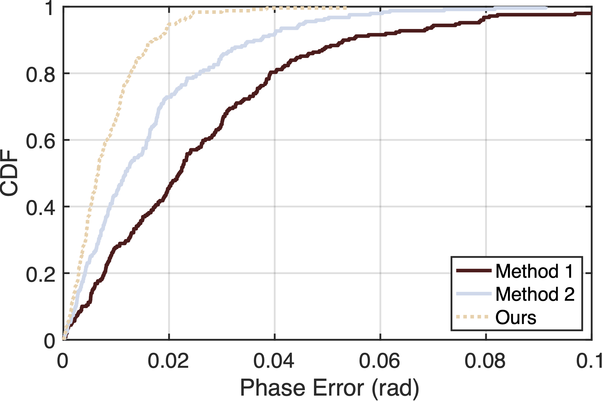

Matlab Plot
Basic settings in Matlab
Download code and data Here
clc;clear;close all;
load('data.mat');
figure;
set(gcf,'unit', 'inches', 'position', [5,5,8,5]); % 设置图片长宽
axes('linewidth', 1.5, 'box', 'on', 'FontSize', 18); % 设置坐标轴线宽
%% 绘制三条cdf曲线
hold on;
h1 = cdfplot(m1); %绘制cdf
set(h1, 'linewidth', 3, 'Color', [86/255,21/255,21/255]); % 调整线宽，线色和线型
h2 = cdfplot(m2);
set(h2, 'linewidth', 3, 'Color', [205/255,217/255,235/255]);
h3 = cdfplot(m3);
set(h3, 'linewidth', 3, 'Color', [239/255, 210/255, 173/255], 'linestyle',':');
%% 删除标题，添加legend，xlabel和ylabel
delete(get(gca,'title'))
legend('Method 1','Method 2','Ours', 'Location', 'southeast')
xlabel('Phase Error (rad)')
ylabel('CDF');
xlim([0,0.1]);
%% 导出矢量图
exportgraphics(gcf,"basic-cdf.pdf",'BackgroundColor','none','ContentType','vector')
The Result is shown as follows:
